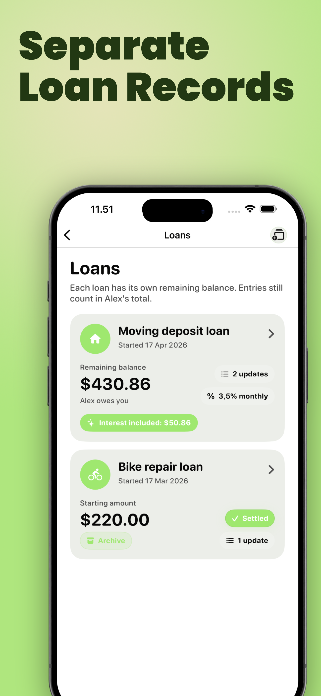
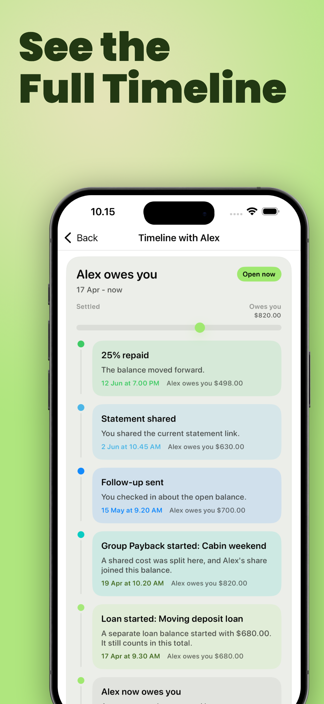

Quick start guide
How YouOweMe works
YouOweMe is a focused iPhone app for money between people, maintained since 2016. The core model is simple: choose the person, record what happened, and the app keeps the balance, history, reminders, shareable records, and next conversation clear.

The mental model
One person. One history. One current balance.
YouOweMe is not built around isolated debts that disappear from context. It is built around ongoing money relationships, where expenses, repayments, corrections, and follow-ups all belong to the same story.
Pick the person or client
Start with who the money is with: a friend, family member, roommate, client, partner, or someone you have a loan with.
Add entries and repayments
Record what happened: you paid, they paid, you lent money, they repaid, a bill repeated, or a shared expense was split.
Let the balance update
The app updates the running balance and keeps the dated history, notes, reminders, statements, and communication context together.
What the app keeps clear
The simple record can grow when the situation does.
Most people start by tracking who owes what. YouOweMe adds structure only when the real situation needs it: a separate loan, a reminder, a clearer message, a live statement, or a formal PDF.
Running balance and Balance Replay
See where things stand now, and what was true before.
Every expense, loan, repayment, partial repayment, and adjustment updates one balance. When you scroll through the history, Balance Replay helps you understand what the balance looked like around older entries instead of only showing today's total.
New to the idea? The running balance guide explains the basic meaning, a simple formula, and an example before you use the app.
Learn what a running balance means
Split Entry
Split one shared expense into clean per-person balances.
When one payment belongs to several people - dinner, tickets, groceries, a taxi, household supplies, or a trip cost - enter the total once, choose who participated, and split it equally or with custom amounts. YouOweMe saves the correct entry for each real person, so every balance stays separate and clear.
See Split Entry
Loan Records
Keep important loans separate without losing the full picture.
Create a focused record for a specific loan, repayment plan, client project, family bill, rent deposit, or larger balance. The Loan Record has its own remaining balance, while the full person balance still stays correct.
If temporary support was just agreed and you only need a copyable note first, use the Temporary Financial Support Record Template before tracking repayments in the app.
See Loan Records
Reminders and Smart Money Check-Ins
Do not rely on memory for timing.
Set reminders for a specific IOU, bill, a person's balance, or a lighter follow-up check-in, then let Smart Money Check-Ins surface moments when a follow-up or repayment update may be useful. Nothing is sent automatically - you decide whether to act, edit a message, share a statement, record a payment when appropriate, or do nothing.
If you owe someone and the repayment timing changed, use the repayment update guide before the silence gets awkward.
See payment reminders
Relationship Timeline
See the money story with each person.
Timeline brings entries, repayments, separate loans, follow-ups, repayment updates, loan requests, shared statements, Live Links, PDFs, text exports, and CSV exports into one chronological view. It helps you see what changed, what you already shared, and whether another message makes sense.
See Timeline
Money Conversations
When the number is clear but the wording is hard.
Generate follow-up, ask-for-loan, and repayment-update messages from the real balance and history. You stay in control of the tone before sending anything.
If you are not tracking yet and first need wording for the conversation, read how to ask family for temporary financial help or how to send a repayment update when you need more time.
Read message guidance
Live Link and statements
Share the record without another screenshot.
Send one always-current Live Link when someone needs to review the balance in a browser. For formal situations, create a clear PDF statement from the same records.
If the other person does not want another app, see how one person can keep the record and still share the balance clearly.
See Live Link
Tracking mode
Choose the wording that matches your situation.
On first launch, YouOweMe asks what you are mainly tracking. This makes the app feel natural for your use case, without changing the underlying money record.
Friends & Family
For IOUs, shared costs, reimbursements, family expenses, and everyday running balances with people you know. If you need a quick repayment schedule before tracking the real payments, try the Payment Plan Calculator.
If your situation is temporary help between people - for example rent, groceries, bills, or support repaid in steps - see the Temporary Financial Support Tracker for the softer support-and-repayment workflow.
Clients & Business
For client balances, work payments, partial payments, cleaner records, and statement wording that feels more professional, start with the Simple Client Payment Records solution.
Loans & Repayments
For longer-term loans, repayment history, due dates, remaining balances, and interest - either percentage interest over time or one fixed interest amount added once.
The money logic stays the same.
Tracking mode changes labels, examples, messages, demo content, and statement wording so the app feels natural for friends, family, clients, or loans. It does not change the core record: your balances, entries, currencies, people, repayment math, and saved history stay the same.
Go deeper
When you want more detail, the full site is here.
Running balances, Balance Replay, Timeline, Loan Records, reminders, Live Link, statements, exports, privacy, and more.
Trust Read real App Store reviewsSee how people use the app for family reimbursements, IOUs, loans, client balances, recurring costs, and reminders.
Try the model Open the Running Balance CalculatorSee how entries and repayments change one balance over time before using the full app.
Plan repayment Open the Payment Plan CalculatorTurn a known remaining balance into weekly, biweekly, or monthly repayment steps.
Compare Compare YouOweMe with SplitwiseUnderstand collaborative group ledgers versus YouOweMe's per-person running-balance model.
Compare Compare spreadsheet vs appDecide when notes, spreadsheets, calculators, or YouOweMe make the most sense.
Privacy Understand privacy and dataMoney records are sensitive. See how local records, sync, sharing, AI tools, App Lock, and the full policy fit together.
Start with one balance. Add the serious tools only when you need them.
That is the center of YouOweMe: a clear record first, then reminders, messages, Live Links, Loan Records, and statements when the relationship or amount needs more care.
Updated